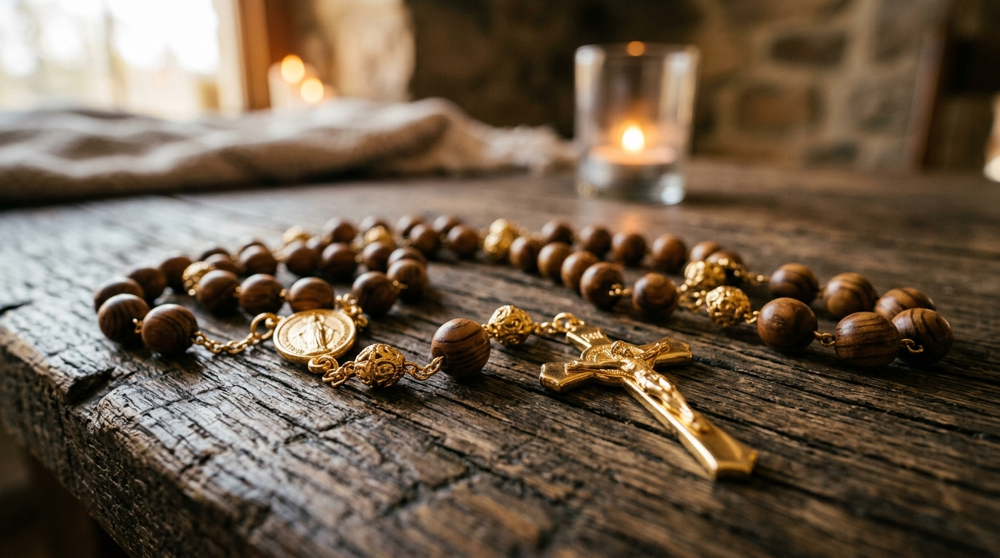

Título de la Oración
Instrucción o meditación
Texto de la oración...
Instrucción o meditación


El rosario cristiano nació en los monasterios medievales como una adaptación práctica de la liturgia. Mientras los monjes recitaban diariamente los 150 salmos bíblicos, la mayoría de los fieles laicos, analfabetos y sin dominio del latín, no podían seguir el texto. Para incluir a toda la comunidad, se adoptó la costumbre de sustituir cada salmo por una oración repetitiva: primero 150 Padrenuestros y más tarde 150 Avemarías. Para no perder la cuenta, se utilizaban cuerdas con nudos conocidas como paternosters, y la devoción comenzó a llamarse «rosario» a partir del latín rosarium (corona o jardín de rosas), entendiendo cada rezo como una flor espiritual ofrecida a María.
La gran difusión popular llegó entre los siglos XIII y XV gracias a la Orden de Predicadores. La tradición sitúa a Santo Domingo de Guzmán como su promotor inicial frente a las herejías del sur de Francia, pero fueron dominicos y cartujos posteriores quienes fijaron su mecánica actual. Hacia el siglo XV, el cartujo Domingo de Prusia y el dominico Alano de la Rupe ordenaron las oraciones en decenas encabezadas por un Padrenuestro, ligando cada bloque a la meditación de un pasaje concreto de los Evangelios, lo que convirtió el conteo mecánico en un método de contemplación profunda.
La fórmula quedó sellada formalmente en 1569, cuando el papa Pío V estandarizó canónicamente el rezo con quince misterios divididos en Gozosos, Dolorosos y Gloriosos. Apenas dos años después, tras la victoria naval de la Liga Santa en Lepanto, atribuida a la oración comunitaria del rosario, la Iglesia fijó el 7 de octubre como su fiesta litúrgica oficial. La estructura se mantuvo intacta durante siglos hasta el año 2002, cuando Juan Pablo II introdujo los Misterios Luminosos para contemplar la vida pública de Jesús, completando los veinte misterios que articulan hoy esta síntesis devocional.